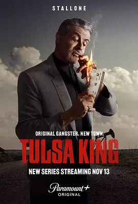

8.4
塔尔萨之王 第一季
Tulsa King Season 1
2022
美国
评分 8.4
导演:
本杰明·塞曼诺夫 / 艾伦·考特勒
演员:
西尔维斯特·史泰龙 / 加内特·赫德兰 / 安德丽·萨维奇 / 马丁·斯塔尔 / 马克斯·凯塞拉
类型:
剧情,犯罪
剧情简介
在纽约监狱服刑25年后，黑手党老大德怀特·“将军”·曼弗雷迪（西尔维斯特·史泰龙 饰）被自己的家族流放至俄克拉荷马州塔尔萨。在这片陌生的土地上，他既无熟人也无后台，却被迫从头打造自己的犯罪帝国。曼弗雷迪迅速拉拢酒吧老板、出租车司机、非法大麻商人等“草根帮手”，将缄默的西部城市变为他的行动基地。镜头在夜色下的条子酒吧、荒废的油库后巷、光鲜街区与贫民小巷之间转换。曼弗雷迪在想要建立权势的同时，却不得不面对监狱留下的阴影和家庭中的失落感：他无法偏离“家族”的轨迹，却也渴望证明自己独立于旧势力之外。情节中夹杂着毒品交易、大规模火拼、绑架与复仇，而在一次私人蒸汽房会面后，曼弗雷迪与一名联邦特工之间的酒后亲昵迹象悄然浮现——令故事在硬汉犯罪外衣下多出一份暧昧张力。演员们于枪声与扑克游戏中将忠诚、赌注、失控与救赎交织，让观众看到“黑帮老大”的粗犷光环背后，是一个在堕落边缘寻找归属的人。此剧已完结。